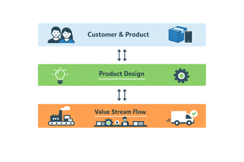
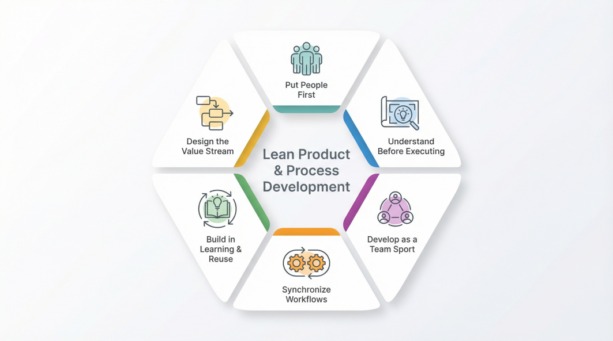
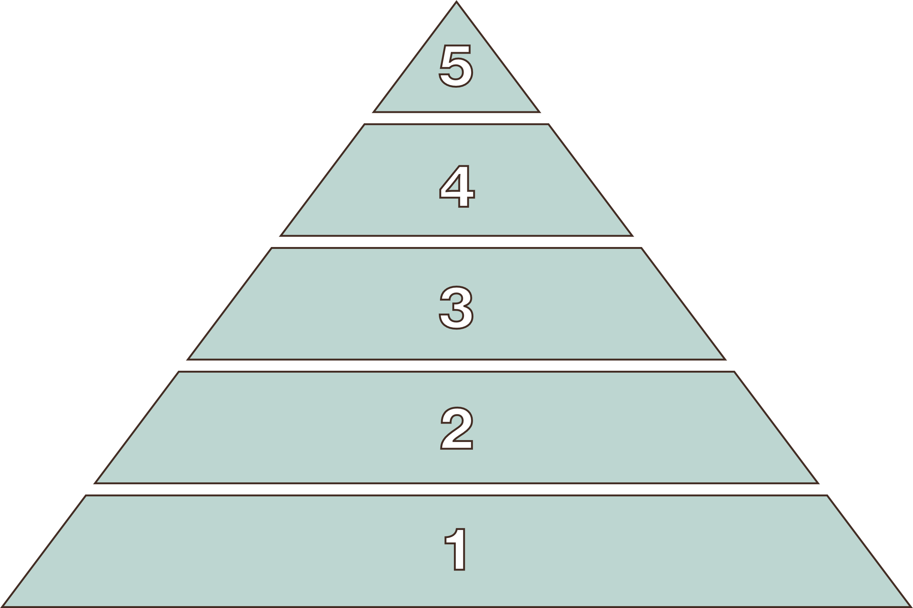
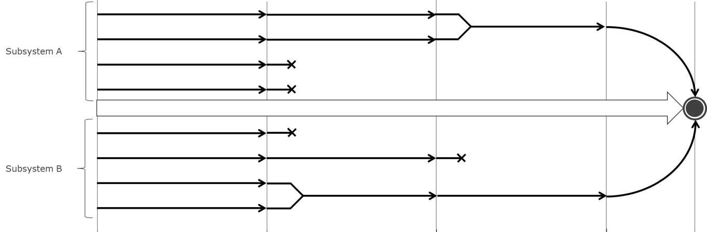
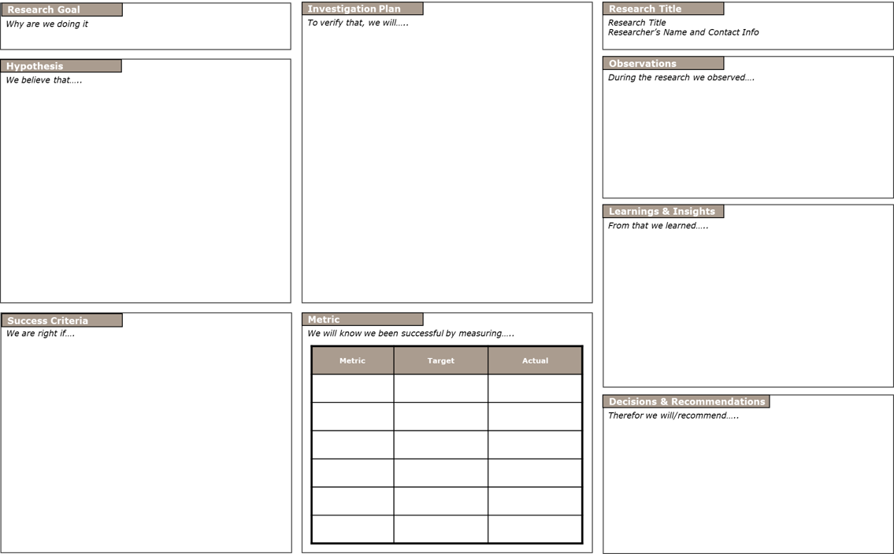
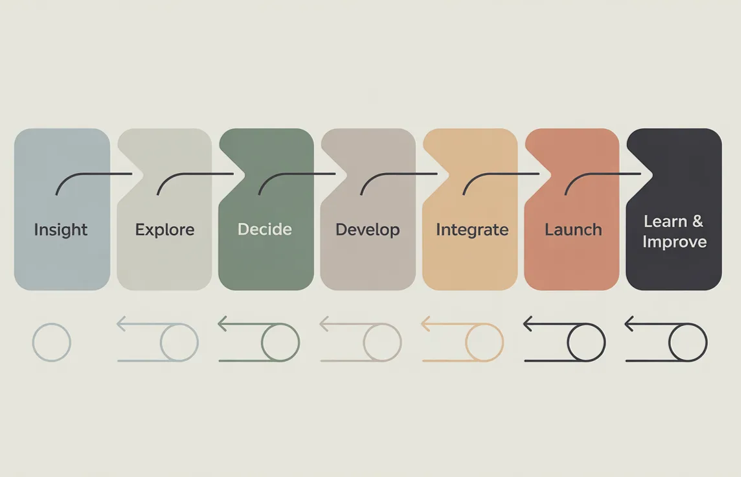
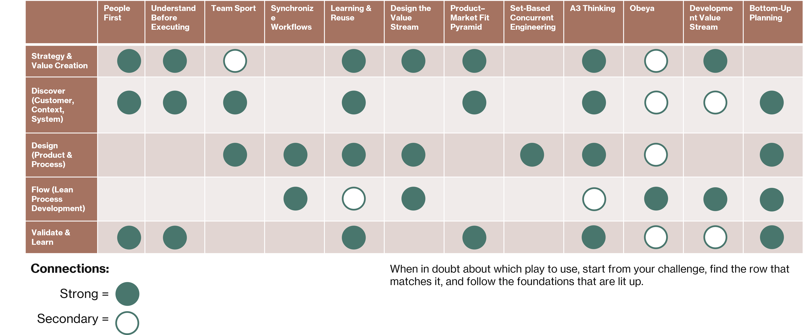

Section 2.1
What is Lean PPD?

Lean Product & Process Development (LPPD) is a systems approach for creating new products, services, and the processes that deliver them — with the aim of maximizing customer value while minimizing waste. It combines lean principles, collaborative ways of working, and fast learning cycles to improve what you develop and how you develop it.
Traditional phase-gate development locks in decisions early, pushes work through silos, and discovers major problems late. LPPD flips this: invest time up front, explore options before committing, and treat development as a learning and problem-solving process — not a linear checklist.
"You never design the product alone. You design the product and the value stream that delivers it — as one integrated system."
In manufacturing, lean focuses on flow, waste elimination, and respect for people on the shop floor. LPPD applies the same spirit to high-uncertainty work: deep customer understanding, rapid experiments, and concurrent exploration before commitment. Knowledge is a first-class output — captured and reused so each new project starts stronger than the last.
Section 2.2
Guiding Principles
Six principles form the foundation of how effective LPPD organizations think about value, people, decisions, and flow. They come from lean thinking, tuned for the unique challenges of development work — where uncertainty is high, knowledge is the currency, and people drive innovation.

Put People First
Develop the developers so they can develop great products.
People — not processes or tools — create value. Design your system so engineers, designers, and cross-functional teams can do their best work: give them the knowledge, authority, and environment to solve problems and make decisions.
Understand Before Executing
Front-load knowledge, back-load decisions.
Invest time up front to deeply understand customers, context, constraints, and trade-offs. Use rapid experiments and set-based exploration to build knowledge cheaply before locking in costly decisions.
Develop as a Team Sport
Cross-functional collaboration beats sequential hand-offs.
Development isn't a relay race. Bring customer insight, design, engineering, manufacturing, and service together from concept to launch — and keep them synchronized through visual management and rhythmic communication.
Synchronize Workflows
Establish cadence and "good enough" interfaces so work can flow.
Instead of waiting for perfect information, define stable points where teams can exchange knowledge and work concurrently. Cadenced cycles create predictable rhythm and reduce waiting — enabling flow even in high-uncertainty environments.
Build in Learning and Knowledge Reuse
Make learning visible, capture it, and use it again.
Every project generates valuable knowledge about customers, technologies, and trade-offs — but in traditional systems this stays tacit and is lost. Make learning explicit through A3s, trade-off curves, and design standards. Reusing knowledge is a core competitive advantage.
Design the Value Stream
Optimize the whole, not the parts.
Make decisions that improve flow, quality, and speed across the entire value stream — from customer insight through manufacturing ramp-up and service — not just what's best for one department. This prevents local optimization that creates bottlenecks downstream.
Section 2.3
Core Mental Models
These mental models make LPPD concrete in everyday work. Each play in the playbook connects back to one or more of them. You don't need to master every concept before moving on — return here when you need to unlock a current problem.
Product–Market Fit Pyramid
Connect LPPD to value creation by making customer, problem, and solution explicit.
Before designing architectures, parts, and processes, teams need clarity on who they are serving and what problem they are really solving. The pyramid anchors development in real customer value instead of an internal wish list. LPPD adds one layer beyond typical product thinking: you also design the value stream that delivers and supports the product.

Set-Based Concurrent Engineering
Reduce late changes and rework by exploring options in parallel and narrowing based on knowledge, not opinion.
Traditional projects pick one concept early and keep "fixing" it as problems appear. Set-based development keeps multiple options open longer, learns about them quickly, and removes options only when they are proven inferior or infeasible. Decisions move from "we believe" to "we know."

Point-based (Traditional)
- Pick one concept early
- Fix problems as they appear
- Late changes = expensive rework
- Decisions based on opinion
- One function at a time
Set-based (LPPD)
- Start with multiple options in parallel
- Narrow by learning, not consensus
- Front-load experiments, back-load commitment
- Decisions based on evidence
- Cross-functional collaboration from day one
A3 Thinking
Create a shared, visual way of framing problems, decisions, and learning.

A3 thinking turns complex problems and decisions into a single structured page: current situation, root cause analysis, options, experiments, and follow-up. The goal is better conversations and better decisions — not better documents. Every completed A3 becomes a reusable knowledge artifact for future projects, surfacing assumptions and knowledge gaps that can be tested rather than debated.
Obeya — Big Room
Provide a shared visual space to coordinate complex development work and decisions.
Obeya (Japanese for "big room") is a physical or digital space where the most important information about a development effort is visible and current — north star and customer needs, plan and flow, design risks, and learning in progress. Instead of each function optimizing in its own tools, the team sees the whole picture and makes better, faster decisions together. It reduces email traffic and creates a regular cadence for cross-functional alignment.
Development Value Stream
See LPPD as a continuous flow from idea to sustained lifecycle — not isolated projects and departments.

The development value stream is the end-to-end flow of work and knowledge from first insight through to a stable, supported product in the field. Mapping it reveals delays, rework, hand-offs, and bottlenecks that slow learning and value creation. It links individual projects to the bigger system — from portfolio to launch — and gives a home for applying lean concepts like pull, WIP limits, and cadence inside development work.
Section 2.5
How This Playbook Uses These Foundations
This playbook is not a collection of random tools. Each play is an application of LPPD principles and core mental models to a specific challenge in product and process development. When you choose a play, you are choosing how you want to think and act.
The chart below maps the plays in this playbook against the improvement areas they address — so you can quickly find what connects to your current challenge.
